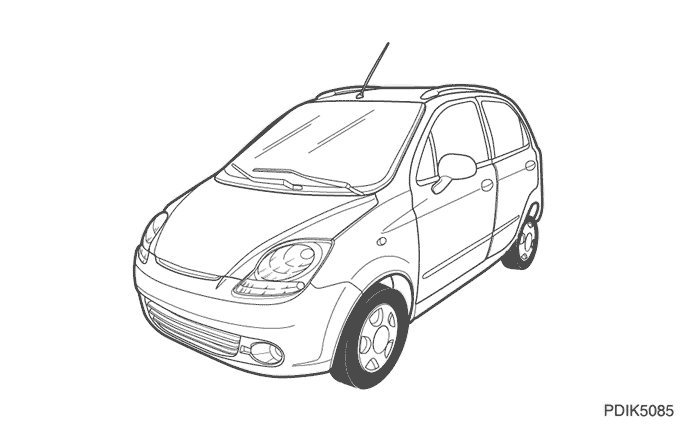
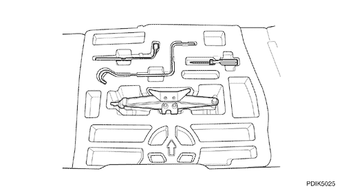

SECCIÓN 6
ASPECTO
1. INSPECCIÓN DEL ESTADO Y REALIZACIÓN DE OPERACIÓN DETALLADA
- Quite el material protector de embalaje exterior y compruebe que no queda nada por quitar. Esta operación debe realizarse tal como se indica en las instrucciones facilitadas.
- Lave el vehículo
- Compruebe el estado de lavado del vehículo.
- Si fuera necesario, siga estos pasos para lavar el coche por fuera.
- - Enjuague con agua o una pulverización fina la suciedad suelta del vehículo.
- - Lave el vehículo con una esponja y agua mezclada con un detergente suave.
- - Enjuague el detergente con agua o una pulverización fina.
- - Enjuague completamente el vehículo con agua.
- - Seque el vehículo de arriba a abajo con una toalla absorbente y suave o una gamuza limpia.
2. COMPROBACIÓN DE MONTAJE, AJUSTE Y FIJACIÓN DE PIEZAS Y COMPONENTES CORRECTOS
Compruebe si el montaje, ajuste y fijación de piezas y componentes están bien.
- - Parachoques
- - Molduras
- - Vigas
- - Emblemas
- - Guardabarros
- - Baca (opción)



3. ACABADO EXTERIOR
Compruebe el exterior y aplique las medidas correctoras necesarias en caso de encontrar defectos. El trabajo de acabado tiene que hacerse de la siguiente forma.
- - Limpieza a fondo: quite el cemento, sellante de burletes, sustancias pulverizadas, etc.
- - Retoques: pintura desconchada (pintar con brocha o aerosol)
- - Pulido a mano: imperfecciones menores en la pintura apomazando en húmedo con papel de lija 600 o compuesto de mano.
4. GUARNECIDO INTERIOR Y REVESTIMIENTOS PROTECTORES DE ALFOMBRILLAS
Inspeccione lo siguiente y limpie si es necesario.
- - Panel de instrumentos y visera parasol
- - Almohadillas de defensa, asientos y alfombrillas.
- - Panel de guarnecido de puertas, consolas y forro del techo.
- - Molduras interiores y guarnecido duro para limpieza de sustancias pulverizadas, ajuste, pulido, sellantes y adhesivos si fuera necesario.
- - Guarnecido del maletero.
5. RUEDA DE REPUESTO, GATO Y HERRAMIENTAS DEL VEHÍCULO
Compruebe la rueda de repuesto, el gato y las herramientas del vehículo colocadas en el maletero/compartimento de carga. La rueda de repuesto va sujeta con un fiador debajo de la bandeja de espuma. El gato y las herramientas están situadas en la bandeja de espuma.
